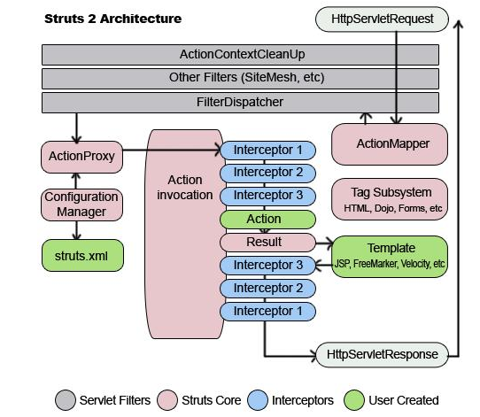

MVC是一个系统架构模式,它强制性的使应用程序的输入、处理和输出分开。使用MVC应用程序被分成三个核心部件：模型、视图、控制器。它们各自处理自己的任务。 视图: 视图是用户看到并与之交互的界面。对老式的Web应用程序来说，视图就是由HTML元素组成的界面，在新式的Web应用程序中，HTML依旧在视图中扮演着重要的角色，但一些新的技术已层出不穷，它们包括Macromedia Flash和象XHTML，XML/XSL，WML等一些标识语言等, 如何处理应用程序的界面变得越来越有挑战性。MVC一个大的好处是它能为你的应用程序处理很多不同的视图。在视图中其实没有真正的处理发生，不管这些数据是联机存储的还是一个雇员列表，作为视图来讲，它只是作为一种输出数据并允许用户操纵的方式。 模型: 模型表示企业数据和业务规则。在MVC的三个部件中，模型拥有最多的处理任务。例如它可能用象EJBs和ColdFusion Components这样的构件对象来处理数据库。被模型返回的数据是中立的，就是说模型与数据格式无关，这样一个模型能为多个视图提供数据。由于应用于模型的代码只需写一次就可以被多个视图重用，所以减少了代码的重复性。 控制器: 控制器接受用户的输入并调用模型和视图去完成用户的需求。所以当单击Web页面中的超链接和发送HTML表单时，控制器本身不输出任何东西和做任何处理。它只是接收请求并决定调用哪个模型构件去处理请求，然后用确定用哪个视图来显示模型处理返回的数据。 现在我们总结MVC的处理过程，首先控制器接收用户的请求，并决定应该调用哪个模型来进行处理，然后模型用业务逻辑来处理用户的请求并返回数据，最后控制器用相应的视图格式化模型返回的数据，并通过表示层呈现给用户。
接收用户request请求处理的框架有很多,有struts1、struts2、spring-mvc、JSF.下面就重点介绍struts2。 而Struts 2框架本身大致可以分为3个部分：核心控制器FilterDispatcher、业务控制器Action和用户实现的企业业务逻辑组件。 下面为其总体架构图  一个请求在Struts 2框架中的处理大概分为以下几个步骤。 客户端提交一个（HttpServletRequest）请求，如上文在浏览器中输入http://localhost: 8080/bookcode/ch2/Reg.action就是提交一个（HttpServletRequest）请求。 请求被提交到一系列（主要是3层）的过滤器（Filter），如（ActionContextCleanUp、其他过滤器（SiteMesh等）、 FilterDispatcher）。注意：这里是有顺序的，先ActionContext CleanUp，再其他过滤器（Othter Filters、SiteMesh等），最后到FilterDispatcher。 FilterDispatcher是控制器的核心，就是MVC的Struts 2实现中控制层（Controller）的核心。 FilterDispatcher询问ActionMapper是否需要调用某个Action来处理这个（HttpServlet Request）请求，如果ActionMapper决定需要调用某个Action，FilterDispatcher则把请求的处理交给ActionProxy。 ActionProxy通过Configuration Manager（struts.xml）询问框架的配置文件，找到需要调用的Action类。例如，用户注册示例将找到UserReg类。 ActionProxy创建一个ActionInvocation实例，同时ActionInvocation通过代理模式调用Action。但在调用之前，ActionInvocation会根据配置加载Action相关的所有Interceptor（拦截器）。 一旦Action执行完毕，ActionInvocation负责根据struts.xml中的配置找到对应的返回结果result。 这就是struts2整个的核心流程,关于具体的实现细节和应用点，大家根据自己的实际情况查阅相关的资料进行了解。